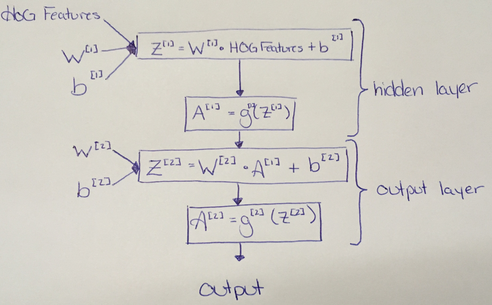

Wow, I can't believe I did it. I made my very first Neural Network from scratch without help! It wasn't easy, and it took three days but I managed.
My husband, Ryan, is currently working on his PhD looking at machine learning of emotion through facial expression photos. I downloaded the Jaffe Database on his recommendation after deciding to create my own Neural Network based on what he has been working on for the past two years.
Having a peak at his research, I was able to use OpenCV to quickly read in and reshape the photos. I decided to use Scikit-Image to run Histogram of Oriented Gradients on the images since, from Ryan's research, the raw data does not classify very well. This was all set up pretty quickly but what really took up time was properly setting up the Neural Network.
This is a model of my Neural Network:

The hidden layer consisted of 147 hidden layers. I used 147 because it was a multiple of 7, which was the number of output layers that I used. The number of output layers was chosen so that each emotion would have an output of 0-1 with the chosen emotion being the one with the value closest to 1. These seven emotions were happy, sad, disgust, surprise, fear, anger, and neutral.
g[1](Z[1]) was a ReLU (Rectified Linear Unit) equation, this means the output will be the maximum of 0 and the input. While g[2](Z[2]) was a sigmoid function.
This just takes care of the forward propagation (prediction) portion of my neural network. Now the Loss Function and Cost Function needed to be calculated to see how far off my neural network was from being accurate. I also included an accuracy function here to test my training data.
The loss function is L(A[2], Y) = (Y log(A[2])) + ((1-Y) log(1-A[2])) with Y being the expected outputs, and A[2] having been calculated from the Neural Network. The cost function is -1/m time the sum of the loss function, where m is the number of items in the training data. This cost lets you know how well is your Neural Network is doing. I then check the accuracy to make sure that the training data is starting to show accurate training. In my program I printed these every 50 iterations.
Now the derivatives need to be calculated in order to change the weights (W) and biases (b).
dZ[2] = A[2] - Y
dW[2] = 1/m dZ[2] A[1]
db[2] = 1/m np.sum(dZ[2], axis=1, keepdims=True)
dZ[1] = W[2] dZ[2] * g[1]`(Z[1])
dW[1] = 1/m dZ[1] A[0]
db[1] = 1/m np.sum(dZ[1], axis=1, keepdims=True)
Note that A[0] is another way of saying the HOG variables. Updating each variable is just the variable minus the learning rate times the derivative of that variable. I.e. W[1] = W[1] - learning rate * dW[1] The learning rate that was used for this was 1 and there were 900 iterations.
After a lot of trial and error, I was able to get a 93% accuracy on my test data. You can see my code here. I'm actually really proud of it so I would be happy if you took the time to look at it and give me some critiques.